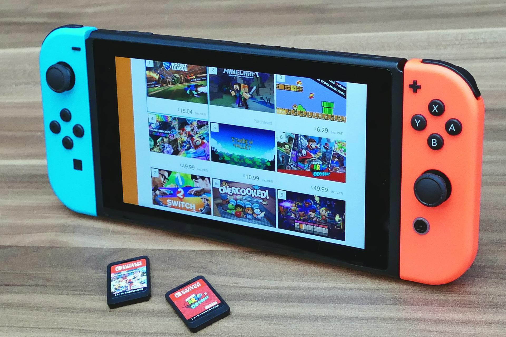

Incoming Switch Games!
Auf der Suche nach den 5 besten neuen Spielen für die Nintendo
Switch die in 2022 erscheinen? Dann sind Sie hier genau richtig.
Dieses Jahr stehen so viele neue Spieleveröffentlichungen für die
Nintendo Switch, dass es uns in den frühen Morgenstunden wachhält.
Wir haben einen Abschnitt über unsere Lieblingsspiele eingefügt, die
in diesem Jahr veröffentlicht werden, sodass Sie die größten neuen
Spiele des Jahres 2022 erfahren können.
Breath of the Wild 2 wurde 2019 angekündigt, aber abgesehen von den
Ausschnitten, die wir bisher aus den Trailern entnommen haben,
wissen wir noch so wenig darüber. Wir wissen, dass es eine direkte
Fortsetzung ist, also ist es derselbe Link und Zelda aus Breath of
the Wild, und dieselbe Geschichte geht weiter. Die beiden Trailer
haben auch etwas dunklere Themen enthüllt und Link auf rätselhafte
Weise gezeigt, der von Malice verzehrt wurde, und hoffentlich Zelda
als spielbaren Charakter.
Release Date: Frühling 2023
Video Preview
Splatoon 3 lässt Sie Inkopolis hinter sich und wagt sich in eine
neue Region, die als Splatlands bekannt ist. Hier findest du eine
neue Stadt, die kampferprobte Inklings und Octolings ihr Zuhause
nennen – Splatsville, auch bekannt als die „Stadt des Chaos“. Das
neue Spiel wird Ihre gewohnte platttastische Multiplayer-Action um
neue Funktionen erweitern, darunter ein Bogen, neue
Anpassungsoptionen und verbesserte Bewegungsfähigkeiten, wenn es
dieses Jahr erscheint.
Release Date: 9. September 2022
Video Preview
Mario + Rabbids: Sparks of Hope ist das zweite in Ubisofts
brillantem Crossover mit Nintendos IP. Die ursprünglichen Helden
sind zurück – zusammen mit einigen neuen Gesichtern, darunter die
titelgebenden Sparks und Rabbid Rosalina – aber dieses Mal sehen
sie sich einer Gefahr auf galaktischer Ebene in Form des neuen
Bösewichts Cursa gegenüber. Das Spiel wird sich über das Mushroom
Kingdom hinaus bewegen, um das breitere Mario + Rabbids-Universum
einzubeziehen, und öffnet jede dieser Welten für die freie
Erkundung. Dasselbe gilt auch für den Kampf, da das Spiel das
Rastersystem entfernt, damit Sie jeden der drei Helden im Spiel
frei steuern können. Es gibt immer noch ähnliche rundenbasierte,
taktische Regeln, die befolgt werden müssen, sollten aber mehr
Kreativität ermöglichen, wenn es um Feinde geht.
Release Date: Frühling 2023
Video Preview
Pokemon Scarlet and Violet wird dieses Jahr wirklich Open-World,
Pokemon Scarlet und Violet werden später in diesem Jahr
veröffentlicht. Ja, 2022 kommt ein weiteres Poke-Venture, das auf
den Grundlagen von Pokemon Legends: Arceus vom Januar aufbaut. Wir
kommen neben dem Gen 9 Pokedex an und erkunden einen brandneuen
Schauplatz, der von Spanien und dem Mittelmeer inspiriert ist, mit
nahtloser Erkundung.
Release Date: 18. November.2022
Video Preview
Falls Guys kommt endlich zu Switch und ist außerdem völlig
kostenlos spielbar. Seine einzigartige, mit Bohnen gefüllte
Version des Battle Royale sieht Spieler, die daran arbeiten, Runde
für Runde im Spiel zu bleiben, indem sie an einem albernen
Hindernisparcours teilnehmen. Freischaltbare Kostüme, auf die man
hinarbeiten kann, Kronen, die man sich verdienen kann, und
lächerlicher Spaß, den man überall haben kann.
Release Date: 21. Juni 2022
Video Preview
